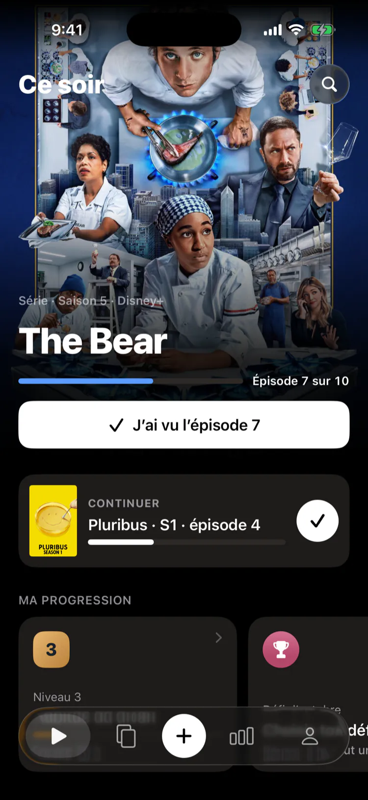
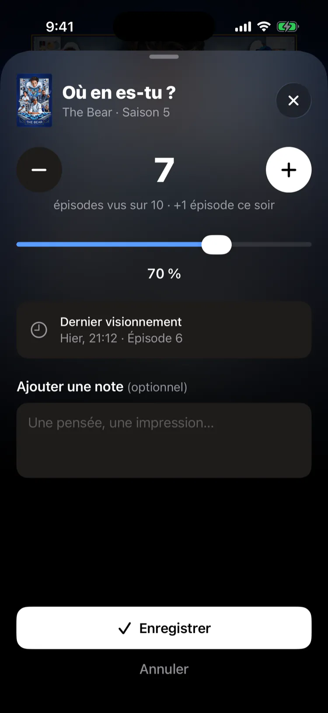
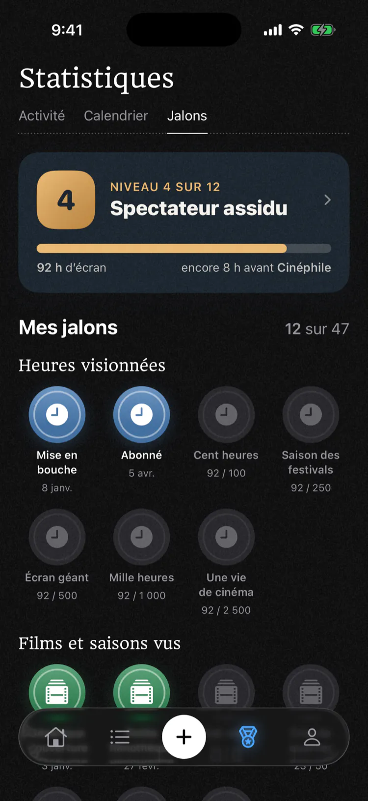

Porcom — Journal de films et de séries
Un petit journal pour tout ce que tu regardes.
Bandes-annonces, épisodes, verdicts et tes heures d’écran, au même endroit. Gratuit, sans compte, sans pub et sans abonnement.

Tout ce que tu regardes, au même endroit.
L’accueil montre ce que tu regardes ce soir. Cherche un titre : l’affiche, le résumé, la distribution et la bande-annonce viennent de TMDB.
Chaque titre s’ouvre sur sa bande-annonce.
La page d’un titre réunit sa bande-annonce, ton verdict et ta progression, avec les plateformes où il est offert au Canada.

Note chaque épisode d’un geste.
Touche Continuer après chaque épisode, ou choisis celui où tu es rendu. Chaque mise à jour devient une séance.

Tes heures d’écran, tes séquences et un objectif annuel.
Tes heures d’écran, les titres vus et ta séquence, avec un objectif pour l’année.

Le calendrier de tout ce que tu as vu.
Chaque séance s’inscrit dans ton calendrier, jour après jour.

Niveaux, jalons et défis du mois.
Douze niveaux à gravir, des jalons à débloquer et un défi chaque mois.

Partage un titre ou ton année, en image.
Ton verdict sur un titre, ou ton année à l’écran, prêts pour une publication ou une story.

Toutes les fonctionnalités.
Bandes‑annonces
Chaque titre s’ouvre sur la sienne
Épisodes
Un geste après chaque épisode
Verdicts
Bof, Aimé, Adoré !, Dévoré !
Statistiques
Heures, séquences et objectif annuel
Niveaux
Douze niveaux et un défi par mois
Widgets
Ton prochain épisode à l’écran verrouillé
Synchro iCloud
Ton journal dans ton iCloud privé
Partage
Un titre ou ton année, en image
Letterboxd
Exporte les films que tu as vus
Gratuit
Sans compte, sans pub, sans abonnement
Questions fréquentes.
Porcom est-elle gratuite ?
Oui. Porcom est gratuite, sans publicité, sans abonnement et sans compte.
Faut-il un compte ?
Non. Porcom fonctionne sans compte ni inscription. Ton journal est enregistré sur ton iPhone et synchronisé avec ton iCloud privé, auquel nous n’avons pas accès.
Comment ajouter un film ou une série ?
Cherche-le par titre : l’affiche, le résumé, la distribution et la bande-annonce viennent de TMDB. Une série s’ajoute une saison à la fois, chacune avec son affiche et son verdict. Tu peux aussi entrer un titre à la main.
Comment suivre où j’en suis dans une série ?
Touche Continuer après chaque épisode, ou choisis l’épisode où tu es rendu. Chaque mise à jour devient une séance, qui alimente tes statistiques, ton calendrier et ta séquence.
Pourquoi des verdicts plutôt que des étoiles ?
Parce qu’ils viennent du blogue Porcom, où chaque billet est une bande-annonce, un titre et un verdict : 👎 Bof, 👍 Aimé, ❤️ Adoré ! et 🔥 Dévoré !. Pour nuancer, tu peux noter de une à cinq étoiles le scénario, les personnages, le jeu, la réalisation, le visuel, la trame sonore et la fin.
Où voir un film ou une série ?
La page de chaque titre montre les plateformes d’abonnement où il est offert au Canada, selon les données de JustWatch fournies par TMDB.
Et si je change d’iPhone ?
Ton journal se synchronise avec ton iCloud et revient sur ton nouvel iPhone. Tu peux aussi exporter en tout temps un fichier de sauvegarde Porcom et le restaurer sur un autre iPhone.
Puis-je exporter vers Letterboxd ?
Oui. Porcom exporte tes films vus dans un fichier CSV au format d’importation de Letterboxd, avec ta date de visionnement, ton verdict et tes notes. Les séries restent dans la sauvegarde Porcom.
Porcom est-elle offerte sur Android ?
Non. Porcom est offerte pour iPhone, en français et en anglais.
D’autres questions ? Va voir l’assistance.
Guides.
- Suivi de séries
Chaque série, épisode par épisode
- Journal de films
La date, le verdict et chaque revisionnement
- Liste à voir
Les titres à voir, repérés dans une bande-annonce
- Bilan de l’année
Ton année à l’écran, prête à partager
- Où regarder
Les plateformes au Canada
- Alternative à TV Time
TV Time a fermé : continue de suivre tes séries
- Alternative à Letterboxd
Films et séries, en privé
- Alternative à Trakt
Sans compte ni abonnement
- Alternative à Serializd
Les films aussi, sans fil d’actualité
- Nouveautés
Toutes les versions de Porcom
Tu aimeras aussi.
- Arpente
Chaque pas raconte un parcours (bientôt)
- Reliure
Toutes vos lectures, reliées
- Dernier Verre
Un dernier, parfaitement dosé (bientôt)
- Coutume
Vos habitudes, un jour à la fois (bientôt)
- Omnomnom
Des t-shirts typographiques qui ont de l’humour, imprimés et livrés par Threadless
Des mêmes créateurs.
- Puuunch
Suivi du temps et feuilles de temps pour petites équipes.
- Makearesu.me
Crée un CV en 5 minutes